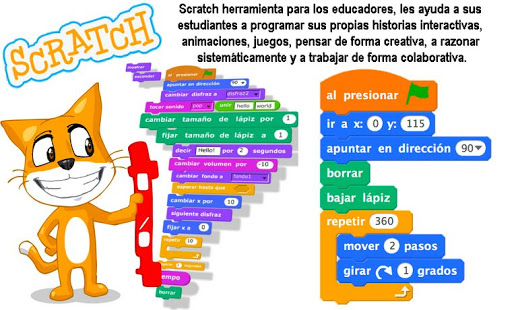
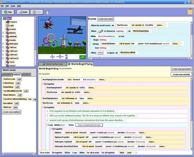
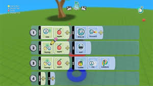
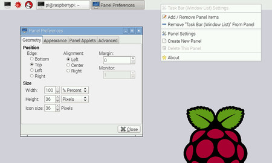
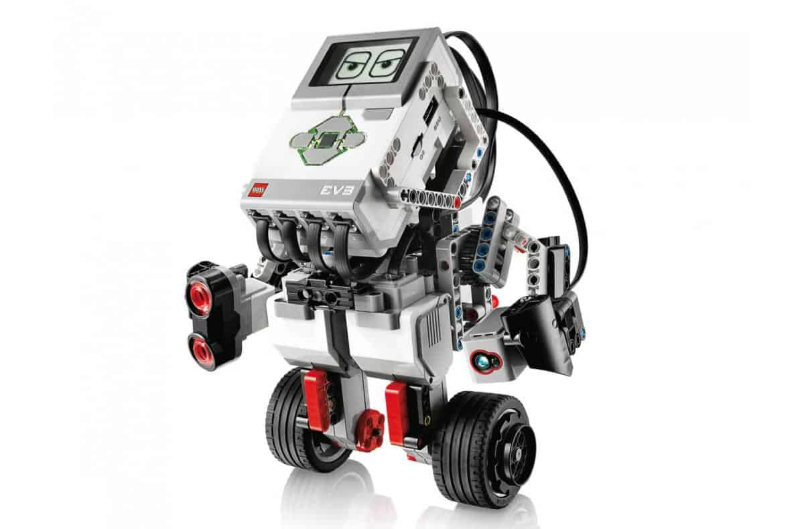
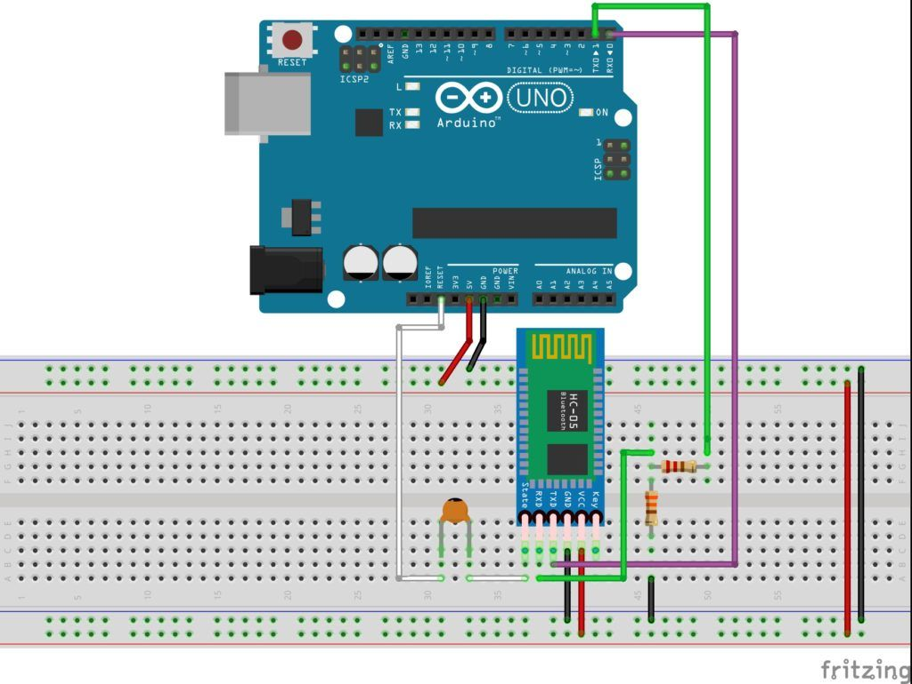
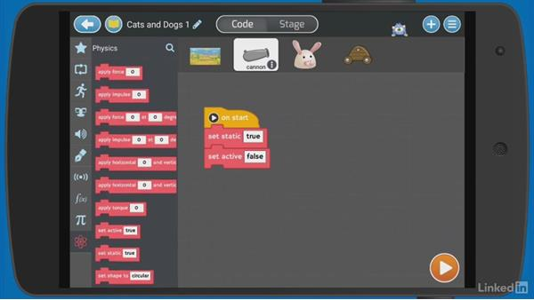
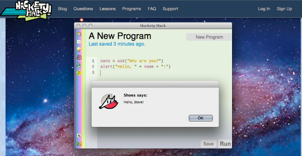
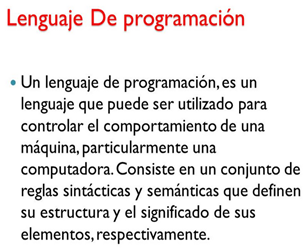
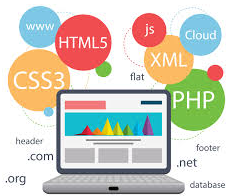

Para aprender a programar se debe tener disciplina para leer y consultar mucha literatura técnica. La otra recomendación es tener muy buenas habilidades en una lengua extranjera, especialmente la lengua inglesa; ya que muchos libros, manuales y material técnico se encuentran en ese idioma.
Otra ayuda práctica, e incluso obligatoria; son los foros que se especializan por cada lenguaje de programación, y que ofrecen respuesta a todas las preguntas planteadas por personas de todo el mundo; o por lo menos brindan una orientación al respecto.
Adicionalmente existen comunidades online, donde se pueden plantear las dudas e inquietudes técnicas, y hay personas con los conocimientos adecuados y necesarios que nos pueden ayudar a resolver esas dudas e inquietudes. Un buen ejemplo de estas comunidades es Stack Overflow, donde se pueden exponer dudas de programación y encontrar soluciones a problemas de distintos lenguajes.
Para aprender a programar existe una amplia oferta de herramientas, que se utilizan en entornos educativos acordes a cada nivel educativo, incluso para niños:
Scratch

Ha tenido un importante impacto en el área educativa, inició en 2006 y tiene una comunidad enorme que crea y propone sus contenidos.
Con esta herramienta se posibilita la creación de videojuegos de manera sencilla y muy visual, y facilita la iniciación de los estudiantes en la programación por bloques. Su página web más que ser un tutorial o una guía paso a paso, es un programa completo con casi infinitas posibilidades; además de contar con su ayuda oficial con recursos para todo tipo de niveles.
Alice

Con este software educativo y abierto es posible aprender programación mediante objetos para animaciones en 3D, para crear juegos interactivos, vídeos o historias completas, con la función ‘arrastrar y soltar’ (drag and drop) objetos.
El resultado se puede visualizar de inmediato, lo que lo hace muy llamativo para los primeros niveles educativos; y que promueve habilidades de programación como los fundamentos del pensamiento lógico y computacional.
Kodu

Con esta aplicación los alumnos pueden crear un videojuego sin tener conocimientos previos de programación, como es el caso de los niños.
Con esta herramienta se posibilita el diseño de escenarios 3D o en tres dimensiones, basándose en tres aspectos: creatividad, resolución de problemas y la narrativa de una historia. Se inicia con un lienzo vacío que los alumnos pueden modificar con los elementos de decoración que se encuentran configurados previamente dentro del programa.
Raspberry PI

Es una herramienta hecha para enseñar un lenguaje de programación muy básico.
Es muy aceptada recientemente por su sencillez y amplias posibilidades. Teniendo en cuenta su accesibilidad, puede ser una buena herramienta para enseñar a programar a niños con poco acceso a la tecnología.
Lego Mindstorms

Son herramientas robóticas para facilitar a los niños su iniciación en el mundo de la programación.
Estos robots son programables y tienen su propio lenguaje de programación, aunque brindan la posibilidad de poderse programar con lenguajes de terceros.
Arduino

Es una herramienta que integra la programación con la robótica en la misma herramienta.
Esta orientada para la formación de niños desde los 10 años de edad. Por tratarse de una herramienta que comprende componentes tanto de hardware como de software, no es comparativamente sencillo con otras herramientas.
Tynker

Es una herramienta para un aprendizaje progresivo, mediante el juego equivalentemente progresivo.
Esta diseñada para que esa progresividad se delimite por grados de dificultad de acuerdo a la edad de los alumnos. Niños de 4 a 7 años comienzan con una programación mediante bloques, luego hasta los 13 años se aprende a crear aplicaciones sencillas con textos; mientras que en el último nivel de estudiantes de Secundaria se programa en lenguaje Java, desarrollo web y conocimientos sobre HTML.
Hackety Hack

Es una herramienta creada para que los niños aprendan a programar sin ninguna experiencia anterior al respecto. Este programa fue creado por un hacker famoso.
También existen herramientas específicas de programación:

Es muy importante aprender alguno de los lenguajes de programación existentes, pero teniendo en cuenta el tipo de proyecto que vamos a desarrollar; ya que existen tipos de lenguajes adecuados según los diferentes tipos de proyectos. Así mismo tienen diferentes niveles de complejidad.
Para desarrollar juegos, apps, programas cliente/servidor; existen lenguajes como C++, Java con similar sintaxis. Existe gran variedad de páginas web para aprenderlo, o solucionar errores y excepciones.

Para desarrollar páginas y/o aplicaciones web, existen lenguajes como JavaScript, PHP (Hypertext Preprocessor) y SQL (Structured Query Language) para Bases de Datos; que en conjunto con otras herramientas como enmarcado estático web con etiquetas HTML (HyperText Markup Language), y diseño mediante hojas de estilo CSS (Cascading Style Sheets); nos permiten crear o mejorar lo relativo a la web.
Aunque existen muchos otros lenguajes y utilidades para desarrollo web, con adecuados conocimientos de las descritas anteriormente y la ayuda de W3Schools.com (World Wide Web Consortium), que es un consorcio internacional que genera recomendaciones y estándares que aseguran el crecimiento de la World Wide Web a largo plazo; tendremos una buena base para avanzar.
Para desarrollar aplicaciones para iPhone y iPads, existe el entorno de desarrollo Xcode que junto a la interfaz de programación Cocoa, con el sistema operativo Mac OS de Apple y con un lenguaje como Objective-C, permite crear aplicaciones Mac e iOS.
Las aplicaciones con sistema operativo Android (o apps Android), están escritas en Java; en un IDE (entorno integrado de desarrollo) Android Studio y Java Development Kit de Oracle.